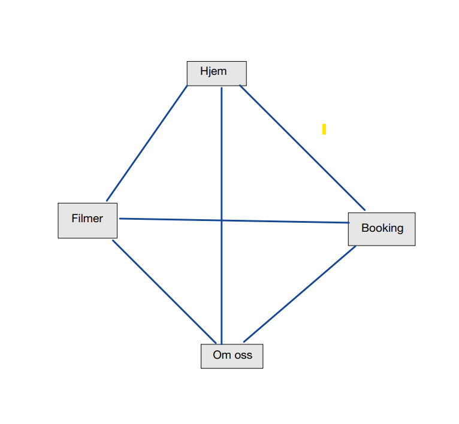
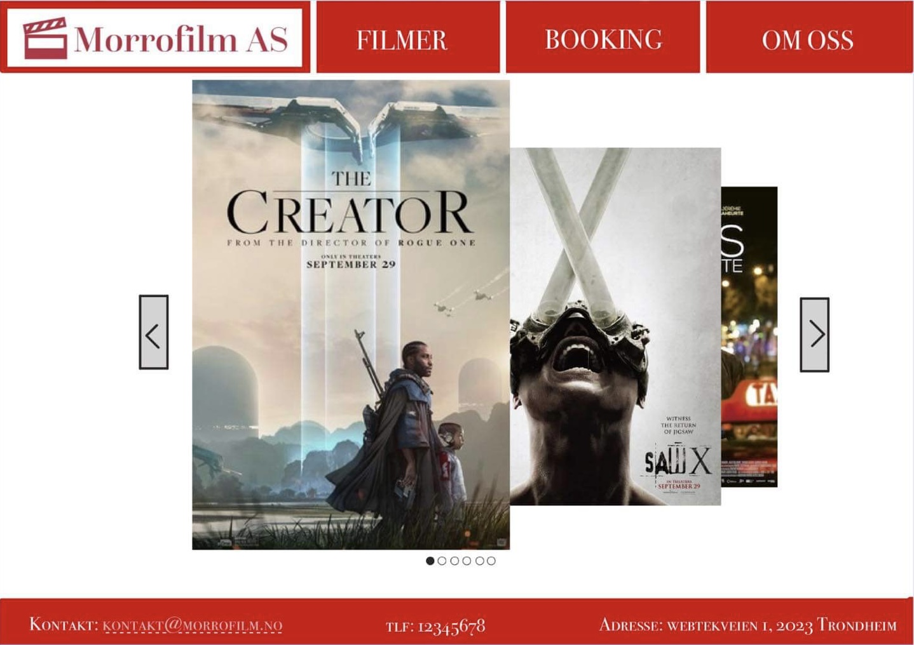
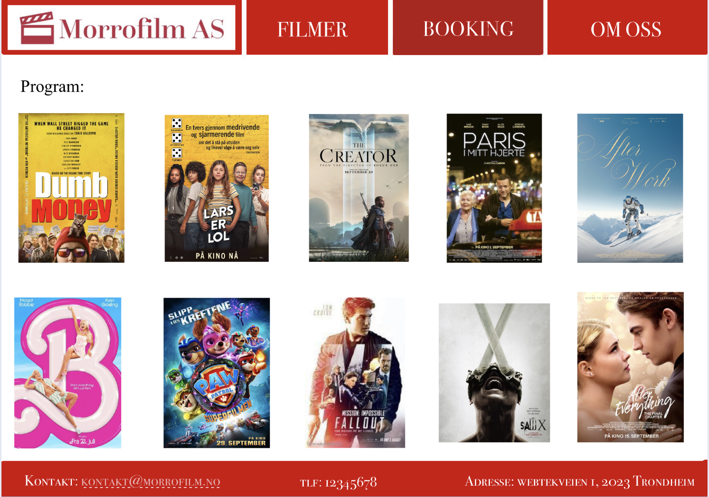
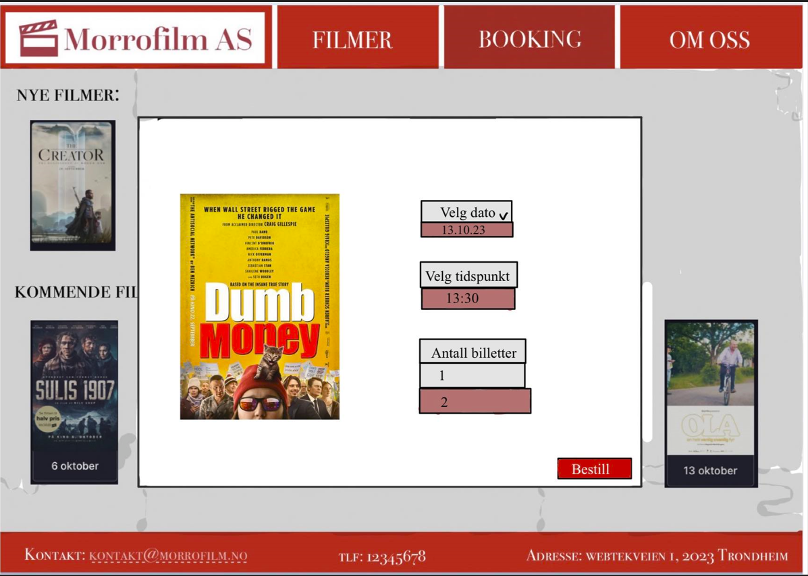
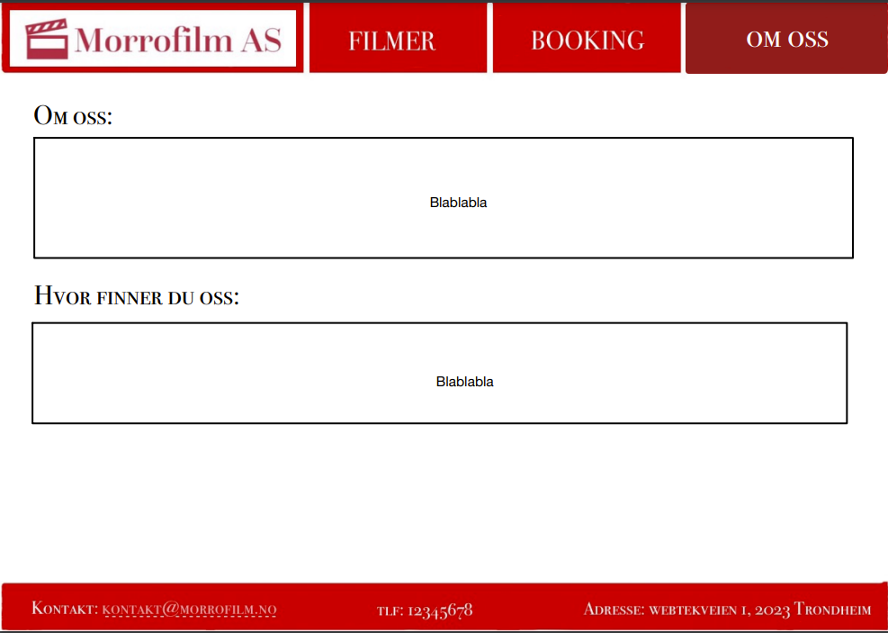
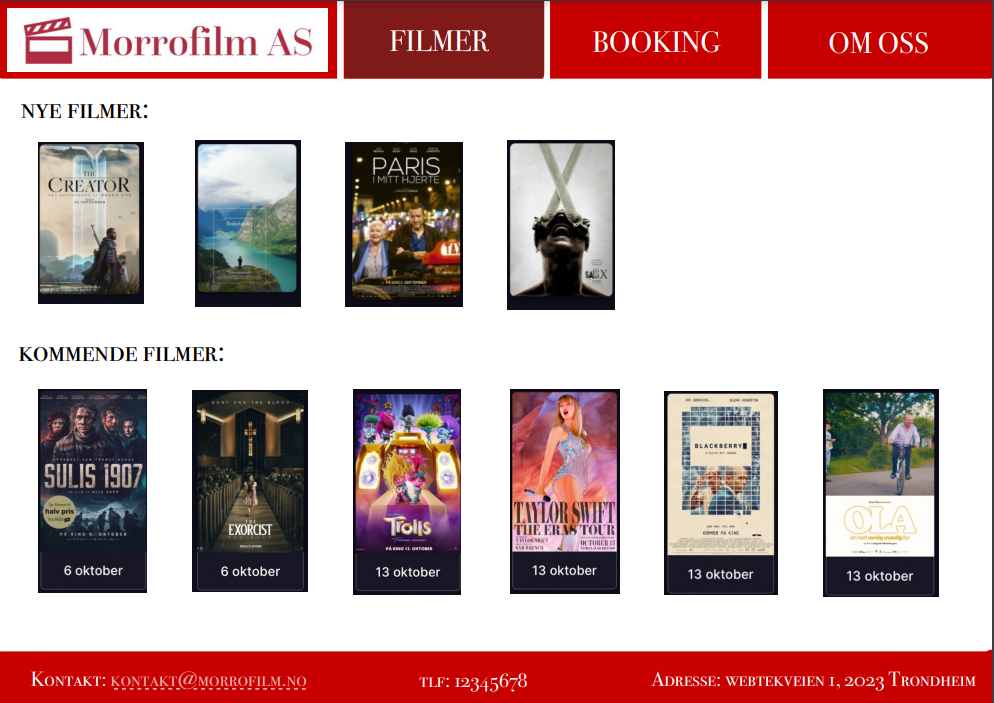
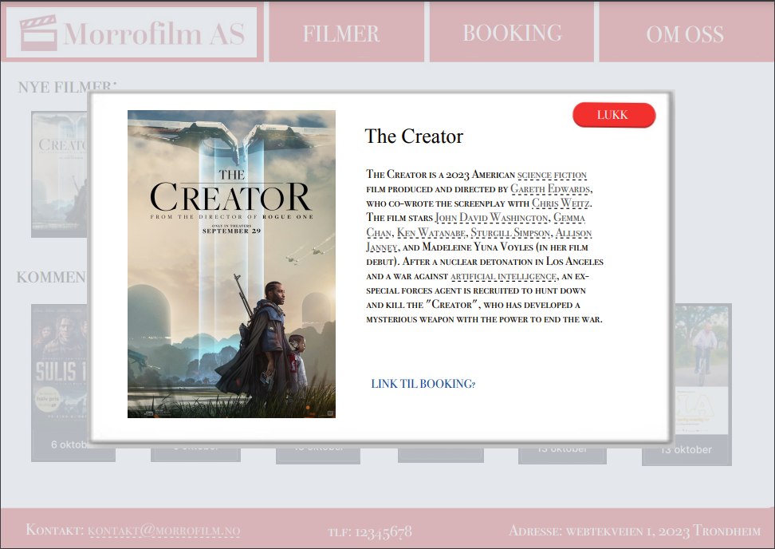

The name of our client is Morrofilm AS, a startup based in Trondheim, which focuses on challenging established companies in the sector through innovation,
lower prices, and hosting interactive events.
Website name: morrofilm.no
Contact person:Markus Jørgensen
Purpose goals and audience
The purpose is still to make a website that people can visit to buy tickets to the cinema, and also get information about the movies shown in the cinema.
The website should be easy to access for everybody, as the audience for the website is a very broad group of people. In order to achieve this the website has to be intuitive as well as having a good layout that also makes
the visitors of the website feel like it is an easy-to-understand website.
Navigation Structure
The navigation structure is a clique where every page is connected to every other page.
The reason for this is the menu at the top of each page, which is the same no matter which page you are on.
The user can access any of the pages through this menu at all time.
The reason for why we chose this navigation structure is to give the user an intuitive access to each page at all times. Each new page has its own button, and there is no need for the user to hover over anything to view hidden buttons.

Figure 1: Illustration of the navigation structure as described above.
Page Layout and Appearance
Font
Montserrat - We plan to use this font globally throughout the whole website. We have chosen this option to give the website a clean and simple look.
Color Scheme
Text: Black
Background: white
Core colors: Red, Black, White
Navbar
The navbar will be located at the top of the page. When the mouse hovers over a certain tab in the navbar the element of that particular tab will get highlighted.
Footer
The footer will be located at the bottom of the page at all times. “Created by Webtek Consulting”.
Logo
The logo will be displayed at the upper left corner of the page and a part of the navbar. When clicking the logo, this will also take the user back to the starting-page.
Front page
The front page will consist of a dynamic viewing of the current movies being shown at the cinema. This will give a modern look and feel to the website.
Content
Home page:
The Home (Landing) page of MorroFilm AS serves as the gateway to the website, welcoming visitors and providing an overview of what the cinema has to offer. It aims to engage users, direct them to relevant sections, and create a visually appealing first impression.
Design:
An automatic slideshow showcasing upcoming movies. Showcased as a dynamic loop to create a sense of motion and intrigue.
Clear and concise navigation menu with links to essential sections: Booking, About, Movies, and the homepage (which is accessed by clicking the logo).
The home page essentially has no other function than to be visually pleasing, and to make the user want to watch the showcased movies. This is also where news would be displayed, e.g. if there were to be an upcoming event at out movie theatre.
Booking:
Booking: The Booking page of MorroFilm AS is dedicated to enabling users to reserve tickets for upcoming movies. It provides a user-friendly interface to browse showtimes, and complete the booking process.
Design:
An intuitive calendar or date picker to choose the desired movie date.
Time availability indicators to help users make informed choices.

Figure 2: Mockup of the homepage of the website

Figure 3: Mockup of the bookingpage with all the movies being shown at the theater

Figure 4: Mockup of the booking page after the user has selected the wanted movie from our program Figure 5: Mockup of the booking page after the user has ordered tickets to the movie
About:
About:
The About page offers insights into MorroFilm AS, its history, mission, and values. It's a place for visitors to learn more about the cinema, its team, and its commitment to providing an exceptional movie-going experience.
Design:
Information about the team behind Morrofilm AS, as well as a summary of our history and values.
Information about our location.

Figure 6: Mockup of the about us page.
Movies:
The Movies page is the hub for movie enthusiasts, providing information about current and upcoming films. Users can explore the cinema's film offerings and make informed choices about their movie night.

Figure 7: Mockup of the movie page when you first enter the page.
Within the movie page, the user can click on a movie to find more information about this movie, as illustrated below.

Figure 8: Mockup of the movie page when a user has clicked on a movie to view more info about it.
Design:
A grid or carousel layout displaying movie posters with release dates.
Detailed movie pages with information about the movie.
User-generated ratings and reviews for social proof and recommendations.
Minimum Requirements
This is the tentative plan of which we plan to fulfill the Minimum Requirements:
A JavaScript function that allows a user to click on any given film to
display more information about the film. This is demonstrated in the mockups above.
This pop-up window will also need a closing button to close the pop-up window.
This will allow the user to gain a deeper understanding of Morrofilms movie selection and find
the film they want to watch in an easy fashion.
For booking tickets, we plan to implement a JavaScript function that takes in the users name,
selected movie and number of tickets. After the user clicks the button “Order”,
the onclick-function should display a message to the user confirming the order and the details of the order.
This function will also include form validation to make sure that the values the user input is valid.
The booking function will also implement a user-defined function which calculates the total price of the purchase.
It should take two parameters, the price of the ticket and the number of tickets. a*b = c.
On the home-page we want to implement a setInterval function.
This function will dynamically change between the current movies now being viewed in
the cinema after a set amount of ms (milliseconds) .
Plan
The following list is what we call an organizational scheme and will be the base for how we plan to organize all the files, folders etc. together in our group.
Note that we are still in an early phase of the project, so it is quite hard to make a very accurate scheme, and there could absolotely be made changes to this scheme
at a later time. The organizational scheme shown below is put in a folder called "Morrofilm AS"
Organizational Scheme:
css
styles.css
img
image1.jpg
image2.jpg
image3.jpg
js
script1.js
script2.js
script3.js
script4.js
pages
about.html
booking.html
movies.html
index.html
File/task
Additional info
Responsible
Deadline
css
Stylingsheet
Everyone
01.11.23
index.html
The homepage for our webpage
Henrik
01.11.23
booking.html
The page where you can buy tickets
Christian
05.11.23
about.html
The page "Om oss"
Herman
10.11.23
movies.html
The page where you can look at movies and upcoming movies
Celina
10.11.23
Javascripts
The different javascripts for the project*
TBA
TBA
Images
Images for the website
Celina
10.11.23
*As of 17th of October we still haven't been introduced to javascript in the subject, so we still not know exactly what kind of functions we want to implement into our website here